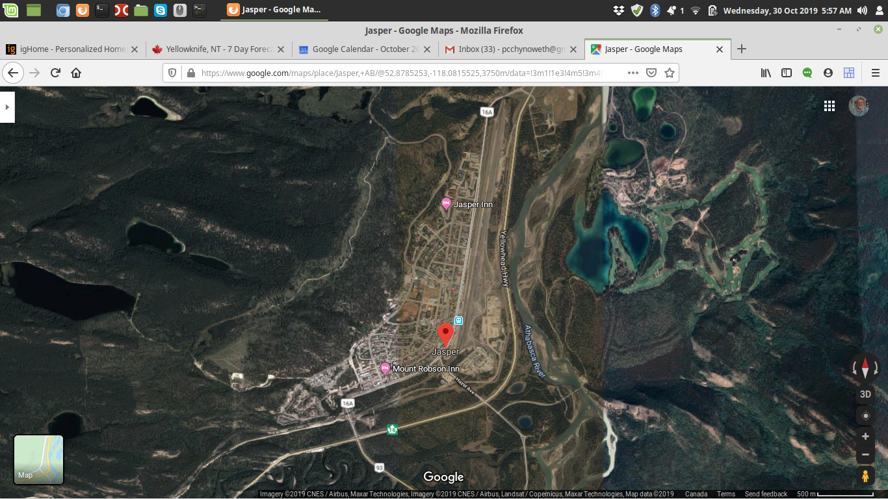

Places I've Lived
London, England
Warkworth, Ontario
Campbellford, Ontario
Ibadan, Nigeria
Yaounde, Cameroon
Peterborough, Ontario
Waterloo, Ontario
Ottawa, Ontario
Calgary, Alberta
Saskatoon, Saskatchewan
Landis, Saskatchewan
Bonnyville, Alberta
 Jasper, Alberta
Yellowknife, Northwest Territories
Go back to main page
 London, England
London, England Calgary, Alberta
Calgary, Alberta Landis, Saskatchewan
Landis, Saskatchewan